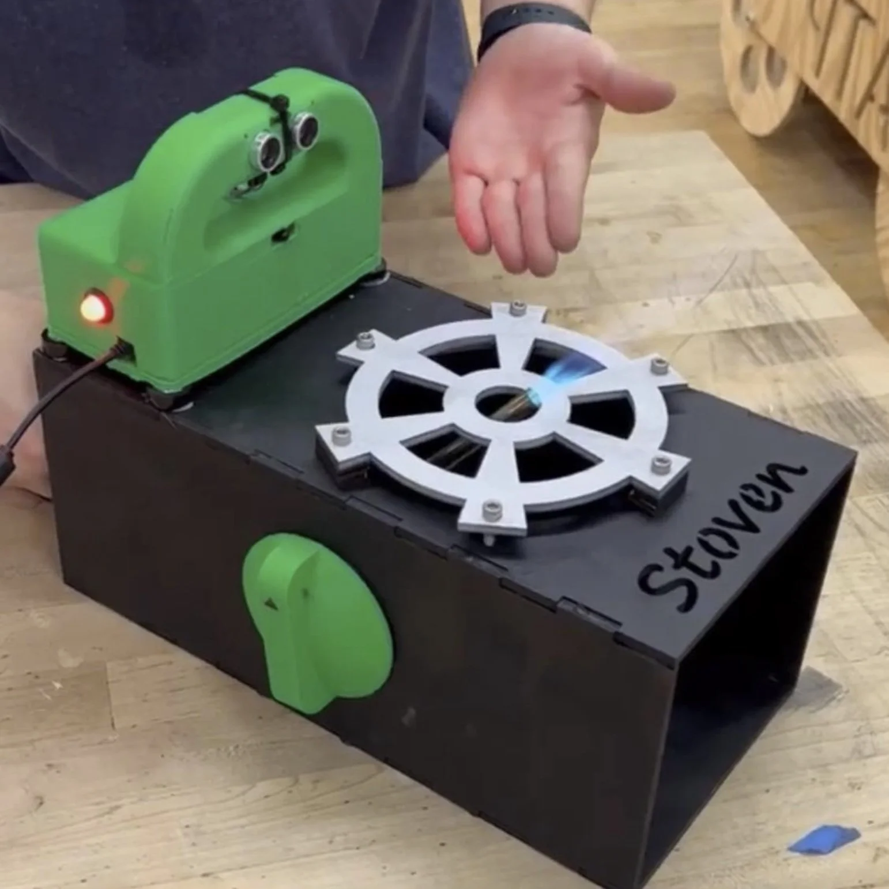
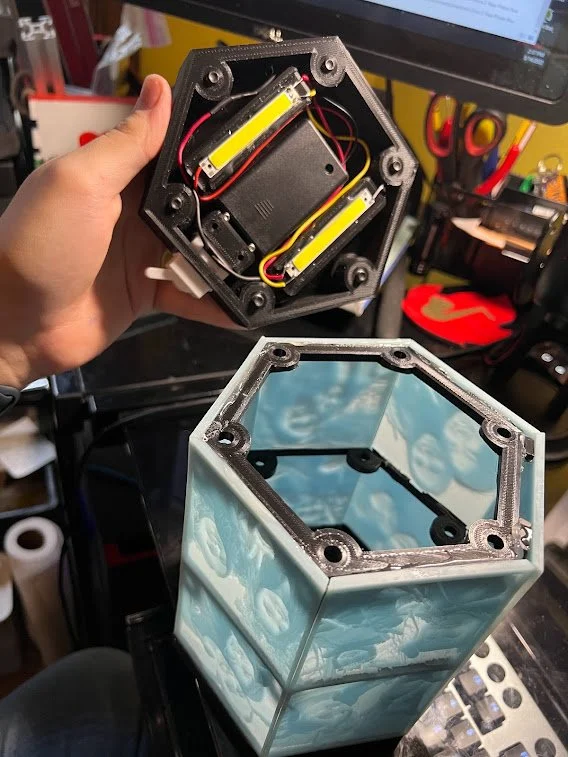

FIRST/CIM (BTHS)
High School Robotics

The Robot
Led the mechanical design team for FRC Team 334 (The TechKnights) at Brooklyn Technical High School. Focused on modular intake and elevator systems.

Manufacturing
Managed the fabrication process, utilizing CNC milling and waterjet cutting for custom chassis plates.